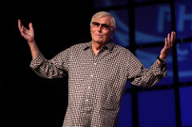

Adam West "The Batman"
About

Adam West was an American actor widely known for his role as Batman in the 1960s ABC series of the same name and its 1966 theatrical feature film. His career spanned 63 years. Adam West was born as William West Anderson on September 19, 1928, in Walla Walla, Washington.His father was a farmer; his mother was an opera singer and concert pianist who was forced to abandon her own Hollywood dreams to care forher family.Following her example, West stated to his father as a youth that he intended after school to go to Hollywood. He moved to Seattle with his mother when he was 15, following his parents' divorce.West attended Walla Walla High School during his freshman andsophomore years, and later enrolled in Lakeside School in Seattle. He graduated with a bachelor's degree in literature and a minor in psychology from Whitman College in Walla Walla,minor in psychology from Whitman College in Walla Walla,where he was a member of the Gamma Zeta Chapter of the Beta Theta Pi fraternity. He also participated on the speech and debate team. Drafted into the United States Army, he served as an announcer on American Forces Network television. After his discharge, he worked as a milkman before moving to Hawaii to pursue a career in television.
Top of PageThe Batman

Batman producer William Dozier cast West as Bruce Wayne and his alter ego, Batman, in the television series Batman, in part after seeing West perform as the James Bond-like spy Captain Q in a Nestlé Quik commercial. He was in competition with Lyle Waggoner for the Batman role.The popular campy show ran on ABC from 1966 to 1968; a feature-length film version directed by Leslie H.Martinson was released in 1966.In his Batman character, West appeared in a public service announcement in which he encouraged schoolchildren to heed then-President Lyndon B. Johnson's call for them to buy U.S. savings stamps, a children's version of U.S. savings bonds, to support the Vietnam War.Return to Batman West often reprised his role as Batman/Bruce Wayne, first in the short-lived animated series The New Adventures of Batman, and in other shows such as The Batman/Tarzan Adventure Hour, Tarzan and the Super 7, Super Friends: The Legendary Super Powers Show, and The Super Powers Team: Galactic Guardians (succeeding Olan Soule in the role). In 1979, West once again donned the Batsuit for the live-action TV special Legends of the Superheroes. In 1985, DC Comics named West as one of the honorees in the company's 50th-anniversary publication Fifty Who Made DC Great for his work on the Batman series.West was considered to play Thomas Wayne, Bruce Wayne's father, in Tim Burton's 1989 Batman film. Originally,he wanted to play Batman. West never appeared in any of the theatrically released post-1960s Batman franchise motion pictures and, to date, neither has Burt Ward (Robin, from the TV series). West made an appearance in a 1992 episode of Batman: The Animated Series on Fox, but not as Batman (as the role of Batman was already being played by Kevin Conroy). Instead, he portrayed Simon Trent, a washed-up actor who used to play a superhero in a TV series called The Gray Ghost and who now has difficulty finding work. The producers nearly considered scrapping that episode, as they figured it mirrored West too much; however, West gladly accepted voicing such a character. West later had a recurring role as the voice of Mayor Grange in the WB animated series The Batman.The actor vocally reprised his role as Batman for the CGI-animated short film Batman: New Times.He costarred with Mark Hamill, who vocally portrayed The Joker and had originally played the role on Batman: The Animated Series.West also voiced Thomas Wayne in an episode of the cartoon series Batman: The Brave and the Bold
Top of PagePersonal Life
West was married three times. His first marriage was to his college girlfriend Billie Lou Yeager in 1950. The couple divorced six years later. In 1957 he married Tahitian dancer Ngahra Frisbie Dawson with whom he had two children before their divorce in 1962. West then married Marcelle Tagand Lear in November 1970. They had two children and remained together for over 46 years, until Adam's death. West also had two stepchildren. During the Batman television series, West's relationship with co-star Burt Ward was described as "problematic". He said, "Burt fell victim to making up stories to sell books. But in a way it was flattering, because he made me sound like King Kong." West also said that he played Batman "for laughs, but in order to do that, one had to never think it was funny. You just had to pull on that cowl and believe that no one would recognize you." Also during the Batman series, he became close friends with crossover co-star Van Williams, who played The Green Hornet. The two of them were also neighbors for a while and spent much time together outdoors, including fishing and hunting, a common hobby of Williams.Adam West died in Los Angeles, California on June 9, 2017, following a brief battle with leukemia. He was 88.After his death, West's former Batman co-star and longtime friend, Burt Ward, released a statement; "This is a terribly unexpected loss of my lifelong friend, I will forever miss him. There are several fine actors who have portrayed Batman in films. In my eyes, there was only one real Batman that is and always will be Adam West. He was truly the Bright Knight." On June 15, 2017, Los Angeles projected the Bat-Signal on City Hall as a tribute to West, and Walla Walla shone the bat-signal on the Whitman Tower
Top of Page